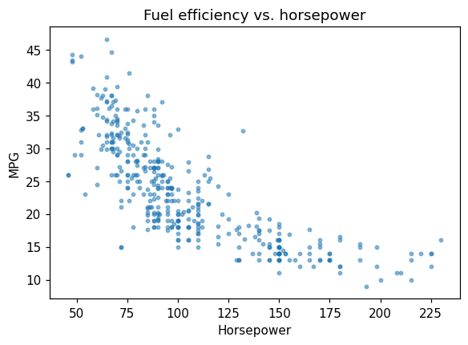
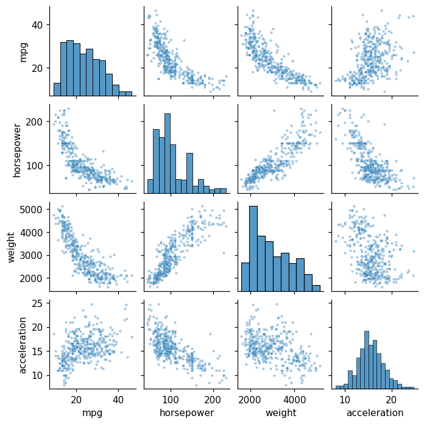
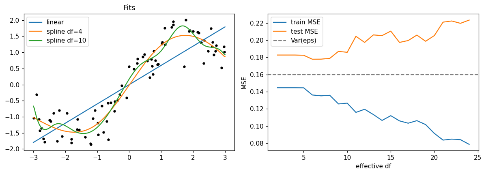
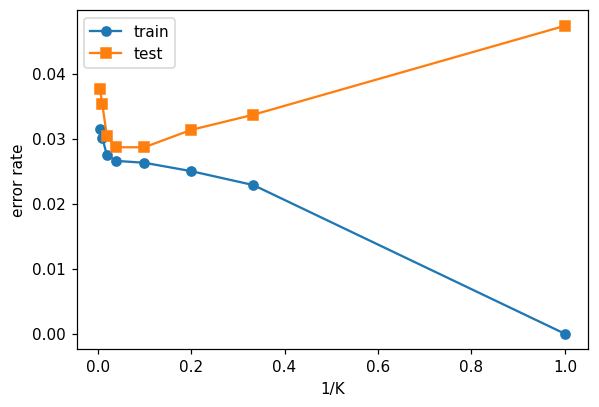
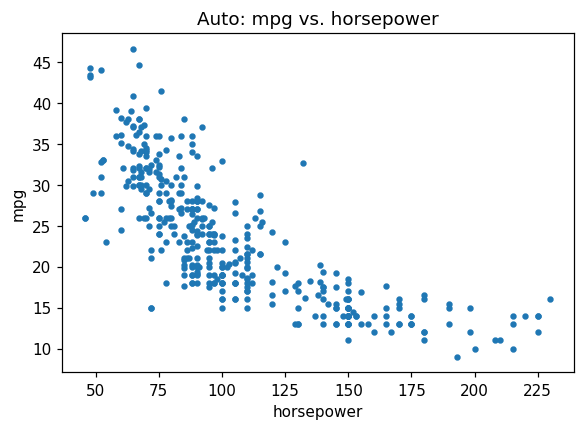
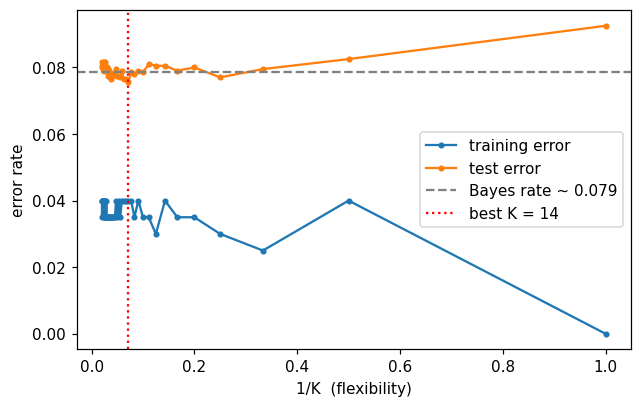

This notebook runs on Colab as-is. The badge link above and the GITHUB_RAW line in the setup cell already point to this repository, so everything installs and loads automatically.
Chapter 2 — Statistical Learning¶
Lab: NumPy, pandas, plotting, KNN¶
Course: Quantitative Research Methods
Instructor: Prof. Dr. Christoph Weisser
Source: James, Witten, Hastie, Tibshirani & Taylor (2023), An Introduction to Statistical Learning, with Applications in Python, Springer. Companion code at statlearning.com.
Goal. Get fluent with NumPy, pandas, and matplotlib; reproduce the bias–variance and KNN figures from the chapter; fit a KNN classifier with cross-validated \(K\).
Setup¶
Run this cell once. The ISLP package can be installed with pip install ISLP. As an alternative, the same data sets are available as CSVs in the workspace’s ALL CSV FILES - 2nd Edition folder.
Google Colab: this notebook also runs on Colab out of the box — the setup cell below installs any missing packages and downloads the data automatically.
# --- Setup: runs locally AND on Google Colab --------------------------------
# Silence only the spurious 'encountered in matmul' RuntimeWarnings that the macOS
# Accelerate BLAS emits; real warnings (deprecations, model caveats) stay visible.
import warnings
warnings.filterwarnings('ignore', message='.*encountered in matmul', category=RuntimeWarning)
import importlib.util, os, subprocess, sys
IN_COLAB = 'google.colab' in sys.modules
def _ensure(pkg, import_name=None):
"""pip-install pkg (quietly) if its import is missing."""
if importlib.util.find_spec(import_name or pkg) is None:
subprocess.run([sys.executable, '-m', 'pip', 'install', '-q', pkg], check=False)
if IN_COLAB: # Colab ships numpy/pandas/sklearn/statsmodels; add course extras
for _pkg, _imp in [('ISLP', 'ISLP')]:
_ensure(_pkg, _imp)
import numpy as np
import pandas as pd
import matplotlib.pyplot as plt
rng = np.random.default_rng(2024)
plt.rcParams['figure.dpi'] = 110
try:
from ISLP import load_data
HAVE_ISLP = True
except ImportError:
HAVE_ISLP = False
print('ISLP not installed; using CSV / URL fallbacks.')
# Local CSV location (repo layout first, then legacy paths, then a data/ cache).
_CANDIDATES = ['../ALL CSV FILES - 2nd Edition',
'ALL CSV FILES - 2nd Edition',
'../../ALL CSV FILES - 2nd Edition', 'data']
CSV = next((p for p in _CANDIDATES if os.path.isdir(p)), 'data')
# GITHUB_RAW lets a fresh Colab runtime fetch any
# CSV that is neither in ISLP nor already local (spaces in the folder -> %20).
GITHUB_RAW = ('https://raw.githubusercontent.com/ChrisW09/Quantitative-Research-Methods/main/'
'ALL%20CSV%20FILES%20-%202nd%20Edition')
# The four datasets NOT in the ISLP package -> load from the book's official
# site so the notebook works on a fresh Colab even before the repo is published.
KNOWN_URLS = {
'Advertising': 'https://www.statlearning.com/s/Advertising.csv',
'Heart': 'https://www.statlearning.com/s/Heart.csv',
'Income1': 'https://www.statlearning.com/s/Income1.csv',
'Income2': 'https://www.statlearning.com/s/Income2.csv',
}
def load(name, **read_csv_kwargs):
"""Load a course dataset. Order: ISLP package -> R datasets -> local CSV
-> official book URL -> your GitHub repo. Works locally and on Colab."""
if HAVE_ISLP:
try:
return load_data(name)
except Exception:
pass
if name == 'USArrests': # classic R dataset, not in ISLP
try:
import statsmodels.api as sm
return sm.datasets.get_rdataset('USArrests', 'datasets').data
except Exception:
pass
path = f'{CSV}/{name}.csv'
if os.path.exists(path): # running from the repo (local)
return pd.read_csv(path, **read_csv_kwargs)
remotes = ([KNOWN_URLS[name]] if name in KNOWN_URLS else []) + [f'{GITHUB_RAW}/{name}.csv']
for url in remotes: # fresh Colab: stream over https
try:
return pd.read_csv(url, **read_csv_kwargs)
except Exception:
continue
raise FileNotFoundError(
f"Could not load {name!r}. Put the CSV in '{CSV}/' or check your connection for the GITHUB_RAW fallback.")
1. NumPy refresher¶
The three things every later chapter leans on: elementwise arrays, matrix algebra, and a seeded random generator.
One detail with real consequences — std(ddof=1) divides by \(n-1\), the sample standard deviation. NumPy’s default is ddof=0, which divides by \(n\) and is the wrong choice whenever you are estimating a population parameter from a sample, i.e. almost always in this course. Pandas defaults the other way (ddof=1), so the same column can give two different answers depending on which library you ask.
x = np.array([3, 4, 5])
y = np.array([4, 9, 7])
x.sum(), x.mean(), x.std(ddof=1)
(np.int64(12), np.float64(4.0), np.float64(1.0))
A = np.array([[1, 2], [3, 4]])
A.shape, A.T, np.linalg.inv(A), A @ A
((2, 2),
array([[1, 3],
[2, 4]]),
array([[-2. , 1. ],
[ 1.5, -0.5]]),
array([[ 7, 10],
[15, 22]]))
z = rng.standard_normal(size=(100, 2))
z.mean(axis=0), z.std(axis=0, ddof=1)
(array([-0.1046211 , 0.03985462]), array([1.00897462, 0.97285773]))
2. pandas¶
Auto again, with the na_values='?' and dropna() treatment Chapter 5 also needs. Three moves that cover most exploratory work: .head() to see the shape of the thing, .describe() for the five-number summary of every numeric column, and .groupby() to split a statistic by a categorical.
Read the groupby('origin') table as the first modelling hint in the course: if mean mpg differs sharply across origins, then origin carries information about mpg, and a model that ignores it is leaving signal on the table.
Auto = load('Auto', na_values='?').dropna()
Auto = Auto.reset_index(drop=True)
print(Auto.shape); Auto.head()
(392, 8)
| mpg | cylinders | displacement | horsepower | weight | acceleration | year | origin | |
|---|---|---|---|---|---|---|---|---|
| 0 | 18.0 | 8 | 307.0 | 130 | 3504 | 12.0 | 70 | 1 |
| 1 | 15.0 | 8 | 350.0 | 165 | 3693 | 11.5 | 70 | 1 |
| 2 | 18.0 | 8 | 318.0 | 150 | 3436 | 11.0 | 70 | 1 |
| 3 | 16.0 | 8 | 304.0 | 150 | 3433 | 12.0 | 70 | 1 |
| 4 | 17.0 | 8 | 302.0 | 140 | 3449 | 10.5 | 70 | 1 |
Auto.describe()
| mpg | cylinders | displacement | horsepower | weight | acceleration | year | origin | |
|---|---|---|---|---|---|---|---|---|
| count | 392.000000 | 392.000000 | 392.000000 | 392.000000 | 392.000000 | 392.000000 | 392.000000 | 392.000000 |
| mean | 23.445918 | 5.471939 | 194.411990 | 104.469388 | 2977.584184 | 15.541327 | 75.979592 | 1.576531 |
| std | 7.805007 | 1.705783 | 104.644004 | 38.491160 | 849.402560 | 2.758864 | 3.683737 | 0.805518 |
| min | 9.000000 | 3.000000 | 68.000000 | 46.000000 | 1613.000000 | 8.000000 | 70.000000 | 1.000000 |
| 25% | 17.000000 | 4.000000 | 105.000000 | 75.000000 | 2225.250000 | 13.775000 | 73.000000 | 1.000000 |
| 50% | 22.750000 | 4.000000 | 151.000000 | 93.500000 | 2803.500000 | 15.500000 | 76.000000 | 1.000000 |
| 75% | 29.000000 | 8.000000 | 275.750000 | 126.000000 | 3614.750000 | 17.025000 | 79.000000 | 2.000000 |
| max | 46.600000 | 8.000000 | 455.000000 | 230.000000 | 5140.000000 | 24.800000 | 82.000000 | 3.000000 |
Auto.groupby('origin')['mpg'].agg(['mean', 'std', 'count'])
| mean | std | count | |
|---|---|---|---|
| origin | |||
| 1 | 20.033469 | 6.440384 | 245 |
| 2 | 27.602941 | 6.580182 | 68 |
| 3 | 30.450633 | 6.090048 | 79 |
3. Plots¶
A scatter for one pair, a pairplot for all of them at once. The pairplot is doing more work than it appears to: off the diagonal it shows every bivariate relationship — several of them clearly curved, mpg against weight and horsepower especially — and on the diagonal the marginal distributions.
Both facts are worth carrying forward. Curvature means a linear model is misspecified (Chapter 7’s subject), and the visible correlation among the predictors means collinearity (Chapter 6’s).
fig, ax = plt.subplots(figsize=(6, 4))
ax.scatter(Auto['horsepower'], Auto['mpg'], s=8, alpha=0.5)
ax.set(xlabel='Horsepower', ylabel='MPG',
title='Fuel efficiency vs. horsepower')
plt.show()

import seaborn as sns
sns.pairplot(Auto[['mpg', 'horsepower', 'weight', 'acceleration']],
height=1.6, plot_kws=dict(s=8, alpha=0.4))
plt.show()

4. Reproducing Figure 2.9 — bias–variance¶
Simulate, fit a linear regression and two splines, plot training and test MSE.
from sklearn.preprocessing import SplineTransformer
from sklearn.linear_model import LinearRegression
from sklearn.pipeline import make_pipeline
from sklearn.metrics import mean_squared_error
def make_data(n=80, seed=0):
rng = np.random.default_rng(seed)
x = np.sort(rng.uniform(-3, 3, size=n))
f = np.sin(x) + 0.3*x
y = f + rng.normal(scale=0.4, size=n)
return x.reshape(-1, 1), y, f
X_tr, y_tr, f_tr = make_data(80, seed=0)
X_te, y_te, f_te = make_data(400, seed=1)
models = {
'linear': LinearRegression(),
'spline df=4': make_pipeline(SplineTransformer(degree=3, n_knots=4),
LinearRegression()),
'spline df=10': make_pipeline(SplineTransformer(degree=3, n_knots=10),
LinearRegression()),
}
fig, axes = plt.subplots(1, 2, figsize=(11, 4))
axes[0].scatter(X_tr, y_tr, s=10, color='black')
for name, mdl in models.items():
mdl.fit(X_tr, y_tr)
grid = np.linspace(-3, 3, 200).reshape(-1, 1)
axes[0].plot(grid, mdl.predict(grid), label=name)
axes[0].legend(); axes[0].set_title('Fits')
df_grid = list(range(2, 25))
tr_mse, te_mse = [], []
for k in df_grid:
m = make_pipeline(SplineTransformer(degree=3, n_knots=max(2, k - 2)),
LinearRegression()).fit(X_tr, y_tr)
tr_mse.append(mean_squared_error(y_tr, m.predict(X_tr)))
te_mse.append(mean_squared_error(y_te, m.predict(X_te)))
axes[1].plot(df_grid, tr_mse, label='train MSE')
axes[1].plot(df_grid, te_mse, label='test MSE')
axes[1].axhline(0.16, ls='--', color='grey', label='Var(eps)')
axes[1].set(xlabel='effective df', ylabel='MSE'); axes[1].legend()
plt.tight_layout(); plt.show()

Test MSE has the predicted U-shape; training MSE never increases.
5. KNN classification¶
Reproduce the classification U-curve (Figure 2.17) on the Default data.
from sklearn.neighbors import KNeighborsClassifier
from sklearn.model_selection import train_test_split
from sklearn.preprocessing import StandardScaler
Default = load('Default')
y = (Default['default'] == 'Yes').astype(int).values
X = Default[['balance', 'income']].values
Xtr, Xte, ytr, yte = train_test_split(X, y, test_size=0.3,
random_state=0)
scaler = StandardScaler().fit(Xtr)
Xtr_s = scaler.transform(Xtr); Xte_s = scaler.transform(Xte)
ks = np.array([1, 3, 5, 10, 25, 50, 100, 200])
tr_err, te_err = [], []
for k in ks:
knn = KNeighborsClassifier(n_neighbors=int(k)).fit(Xtr_s, ytr)
tr_err.append(1 - knn.score(Xtr_s, ytr))
te_err.append(1 - knn.score(Xte_s, yte))
fig, ax = plt.subplots(figsize=(6, 4))
ax.plot(1/ks, tr_err, marker='o', label='train')
ax.plot(1/ks, te_err, marker='s', label='test')
ax.set(xlabel='1/K', ylabel='error rate'); ax.legend()
plt.show()

Reading the output. The U is the bias–variance trade-off made visible in a classifier. At \(K = 1\) every training point is its own neighbour, so training error is zero by construction and test error is high — the decision boundary is memorising noise. As \(K\) grows the boundary smooths and test error falls; push \(K\) too far and the neighbourhood spans genuinely different customers, so bias takes over and test error climbs again.
Note that \(1/K\), not \(K\), is the flexibility axis, which is why the ISLP figure plots it that way: large \(K\) is the restrictive end.
6. KNN by hand, then by scikit-learn¶
The deck’s Exercise 2.7 classifies one query point from six labelled points, by hand, for \(K = 1\) and \(K = 3\) — and the answer flips between them. Doing it in code alongside the arithmetic is the cheapest way to be sure you have understood what KNeighborsClassifier does, because it is genuinely just this.
from sklearn.neighbors import KNeighborsClassifier
P = np.array([[2, 4], [1, 2], [3, 2], [4, 4], [1, 5], [4, 1]])
labels = np.array(['Blue', 'Red', 'Red', 'Blue', 'Blue', 'Red'])
x0 = np.array([2, 3])
d = np.sqrt(((P - x0) ** 2).sum(axis=1))
order = np.argsort(d, kind='stable')
for rank, j in enumerate(order, start=1):
print(f'P{j + 1} ({P[j, 0]}, {P[j, 1]}) d = {d[j]:.3f} {labels[j]}'
+ (' <- nearest' if rank == 1 else ''))
for K in (1, 3):
nearest = order[:K]
p_red = (labels[nearest] == 'Red').mean()
hand = 'Red' if p_red > 0.5 else 'Blue'
sk = KNeighborsClassifier(n_neighbors=K).fit(P, labels).predict([x0])[0]
print(f'\nK={K}: neighbours {[f"P{j+1}" for j in nearest]}, '
f'P(Red) = {p_red:.3f} -> by hand {hand}, sklearn {sk}')
P1 (2, 4) d = 1.000 Blue <- nearest
P2 (1, 2) d = 1.414 Red
P3 (3, 2) d = 1.414 Red
P4 (4, 4) d = 2.236 Blue
P5 (1, 5) d = 2.236 Blue
P6 (4, 1) d = 2.828 Red
K=1: neighbours ['P1'], P(Red) = 0.000 -> by hand Blue, sklearn Blue
K=3: neighbours ['P1', 'P2', 'P3'], P(Red) = 0.667 -> by hand Red, sklearn Red
Reading the output. \(P_1\) at distance 1.000 is the single nearest point, so \(K = 1\) predicts Blue with \(\hat P(\text{Blue}) = 1\). Widening to \(K = 3\) brings in \(P_2\) and \(P_3\), both Red and both at distance 1.414, so \(\hat P(\text{Red}) = 2/3\) and the prediction flips to Red. scikit-learn agrees with the hand arithmetic in both cases.
This is the U-curve of §5 in miniature. \(K = 1\) committed the entire prediction to one point — no averaging, no error tolerance — and a single extra pair of neighbours reversed it. That volatility is the variance the U-curve measures, and note also the honest caveat: \(P_2\) and \(P_3\) tie exactly, so which one a library reports first is an implementation detail. Ties are not a corner case in KNN, they are the reason odd \(K\) is conventional for two classes.
7. Exercises¶
Repeat the bias–variance simulation with a noisier truth (
scale=0.8). Where does the U-curve minimum move?Replace
sin(x) + 0.3*xwith a near-linear truth0.5*x + 1. Verify that the linear model now wins.Standardise
DefaultwithRobustScalerinstead ofStandardScaler. Does \(K^*\) change?Add
student(binary) as a third predictor in the Default KNN. Does test error improve?
Lecture exercises — worked Python solutions¶
The chapter 2 slide deck tags two exercises as [Python]: Exercise 2.8 — Scatter and Flexibility on Auto and Extended Exercise 2.2 — KNN simulation study. Both are mirrored here as fully worked, runnable solutions. The code uses the load() helper from the setup cell (never hard-coded paths), and the numeric results quoted on the slides are noted as trailing comments.
Exercise 2.8 — Scatter and Flexibility on Auto [Python]¶
Load the Auto data, make a scatter plot of mpg (y-axis) against horsepower (x-axis), and comment on what level of flexibility a good model of this relationship needs. Note that horsepower contains a few "?" missing entries you must handle.
# Exercise 2.8 — worked solution ------------------------------------------------
# Load via the course helper (ISLP package if installed, else the bundled CSVs).
Auto28 = load('Auto')
# In the raw CSV the '?' entries make pandas read horsepower as strings
# (dtype object). Handle them exactly as on the slide: drop those rows, then
# convert to float. (The ISLP copy is already numeric, so this branch is a no-op.)
if Auto28['horsepower'].dtype == object:
Auto28 = Auto28[Auto28['horsepower'] != '?'].copy() # drops 5 missing rows
Auto28['horsepower'] = Auto28['horsepower'].astype(float)
fig, ax = plt.subplots(figsize=(6, 4))
ax.scatter(Auto28['horsepower'], Auto28['mpg'], s=10)
ax.set_xlabel('horsepower'); ax.set_ylabel('mpg')
ax.set_title('Auto: mpg vs. horsepower')
plt.show()
print('n =', Auto28.shape[0]) # expected: 392
print('corr =', round(Auto28['horsepower'].corr(Auto28['mpg']), 2)) # expected: -0.78

n = 392
corr = -0.78
Interpretation (as on the slide). After dropping the 5 missing rows, \(n = 392\). The cloud is clearly nonlinear: mpg falls steeply as horsepower rises and then flattens (a convex, decreasing curve; correlation \(\approx -0.78\)). A straight line would underfit this curvature (high bias); a moderately flexible fit — a quadratic/polynomial or a spline — captures it well; an extremely flexible fit that wiggles through every point would overfit (high variance).
Extended Exercise 2.2 — KNN simulation study [Python]¶
Build a controlled experiment that exposes the bias–variance trade-off in KNN.
Simulate a 2-class 2-D problem: class 0 from \(\mathcal{N}((0,0), I)\) and class 1 from \(\mathcal{N}((2,2), I)\). Draw \(n_{\text{train}} = 200\) and a large \(n_{\text{test}} = 2000\) (half per class).
For \(K = 1, 2, \ldots, 50\) fit a \(K\)-NN classifier and record the training and test error rates.
Plot both errors against \(1/K\) (flexibility) and identify the \(K\) that minimises test error.
Explain each curve via bias and variance, and compare the best test error to the Bayes rate \(\Phi(-\sqrt{2}) \approx 0.079\) (means \(2\sqrt{2}\) apart, unit variance).
# Extended Exercise 2.2 — worked solution (parts 1-2) ----------------------------
from sklearn.neighbors import KNeighborsClassifier
rng22 = np.random.default_rng(1) # the slide's seed -> reproduces its numbers
def sample(n):
"""Draw n points, half per class: class 0 ~ N((0,0), I), class 1 ~ N((2,2), I)."""
n0 = n // 2
X = np.vstack([rng22.normal([0, 0], 1, (n0, 2)), # class 0, centre (0,0)
rng22.normal([2, 2], 1, (n - n0, 2))]) # class 1, centre (2,2)
y = np.r_[np.zeros(n0), np.ones(n - n0)]
return X, y
Xtr, ytr = sample(200) # training set (drawn FIRST -- the draw order matters
Xte, yte = sample(2000) # for reproducing the seeded numbers), then the test set
Ks = range(1, 51)
tr_err, te_err = [], []
for K in Ks: # (2) fit KNN for K = 1..50
knn = KNeighborsClassifier(n_neighbors=K).fit(Xtr, ytr)
tr_err.append(1 - knn.score(Xtr, ytr)) # error rate = 1 - accuracy
te_err.append(1 - knn.score(Xte, yte))
best_K = int(np.argmin(te_err)) + 1
print('best K =', best_K, ' min test err =', round(min(te_err), 3))
# expected (this seed): best K = 14 min test err = 0.076
print('train err at K=1 :', round(tr_err[0], 3)) # expected: 0.0 (memorises)
print('train err at K=50:', round(tr_err[-1], 3)) # expected: 0.035
print('test err at K=1 :', round(te_err[0], 3)) # expected: 0.093
best K = 14 min test err = 0.076
train err at K=1 : 0.0
train err at K=50: 0.035
test err at K=1 : 0.093
# Extended Exercise 2.2 — worked solution (parts 3-4) ----------------------------
# Bayes rate for two unit-variance Gaussians whose means are 2*sqrt(2) apart:
# Phi(-sqrt(2)) -- the irreducible floor for ANY classifier on this problem.
from scipy.stats import norm
bayes = norm.cdf(-np.sqrt(2))
print('Bayes error rate =', round(bayes, 3)) # expected: 0.079
inv_K = [1 / K for K in Ks] # x-axis: flexibility = 1/K
fig, ax = plt.subplots(figsize=(6.5, 4))
ax.plot(inv_K, tr_err, marker='.', label='training error')
ax.plot(inv_K, te_err, marker='.', label='test error')
ax.axhline(bayes, ls='--', color='grey', label=f'Bayes rate ~ {bayes:.3f}')
ax.axvline(1 / best_K, ls=':', color='red', label=f'best K = {best_K}')
ax.set_xlabel('1/K (flexibility)'); ax.set_ylabel('error rate')
ax.legend(); plt.show()
# Expected picture: training error falls to 0 as 1/K -> 1 (K = 1 memorises);
# test error is U-shaped with its minimum near K = 10-20, essentially at the
# Bayes floor.
Bayes error rate = 0.079

Reading the curves (as on the slide). With this seed the best \(K \approx 14\) with test error \(\approx 0.076\) — essentially the Bayes floor \(\approx 0.079\).
Training error climbs from \(0\) at \(K=1\) (each point is its own nearest neighbour) to \(\approx 0.035\) at \(K=50\); it does not track test error.
Test error is U-shaped in \(1/K\): worst at \(K=1\) (\(\approx 0.093\), high variance), dips near \(K \approx 10\)–\(20\), then drifts up for very large \(K\) (rising bias).
Small \(K\) = flexible = low bias, high variance; large \(K\) = rigid = high bias, low variance. Cross-validation would pick a \(K\) in the flat basin at the bottom.